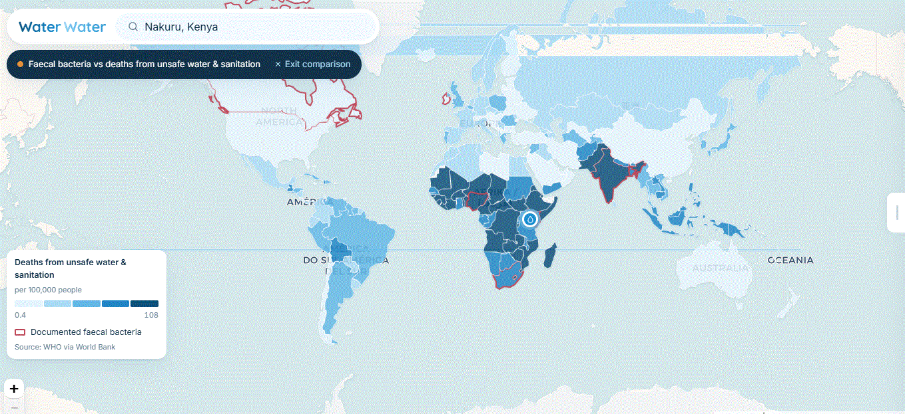
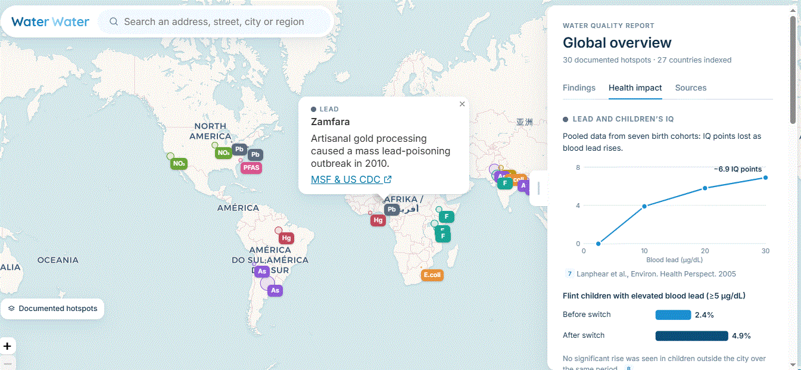
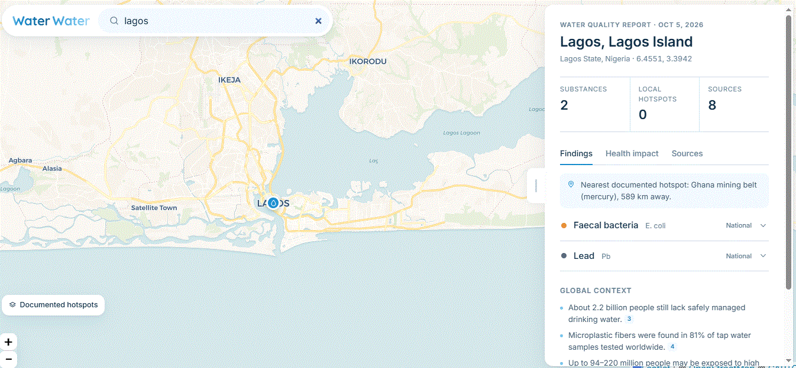
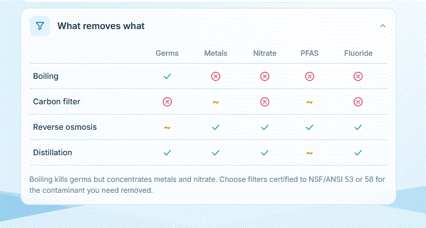

Investigation · October 2026 · 8 min read
The Water Divide
Lead that quietly takes IQ points from children. Bacteria that kill hundreds of thousands of toddlers every year. What’s in a glass of water can decide whether a child grows up, and how well they learn. Here is what the research shows, and why so few people are talking about it.
- 1.4 million
- deaths a year linked to unsafe water, sanitation and hygiene1
- 2.2 billion
- people without safely managed drinking water2
- Up to 7
- IQ points lost as a child’s blood lead rises3
1. The death divide
Put deaths from unsafe water and sanitation on a world map and one region lights up. In World Bank and WHO figures, the rate runs from under 1 death per 100,000 people in the best-served countries to more than 100 in the worst. Almost all of the darkest countries are in sub-Saharan Africa, with India and its neighbours close behind.

Behind that map are children. About 1 in 14 children in sub-Saharan Africa dies before turning five, compared with roughly 1 in 200 in Europe and North America4. Diarrhoeal disease, spread mostly through faecally contaminated water and poor sanitation, kills around 440,000 children under five every year5. It is preventable, and it is no longer a problem in wealthy countries.
A child’s chance of reaching five still depends on where they were born, and much of that gap is about water.
Water isn’t the only reason for the gap. Poverty, nutrition and access to clinics all play a part, and a map can’t pull them apart. But the countries where water makes people sick are, again and again, the same countries where young children die.
2. Lead: the quiet thief of IQ
Lead doesn’t make a child visibly ill at the levels most children meet. It works slowly and silently on the developing brain. The largest pooled study, covering seven birth cohorts, found that IQ falls fastest at the lowest exposures. Children lost about 3.9 IQ points as blood lead rose from 2.4 to 10 µg/dL, and about 6.9 points by 30 µg/dL3.

IQ is only part of the damage. The US Centers for Disease Control and Prevention lists learning and behaviour problems, slowed growth and development, and hearing and speech problems among the effects of childhood lead exposure6. The WHO is blunt: there is no known safe level of lead in the body7.
It isn’t just poor countries
- Flint, Michigan. After the city switched water source in 2014, the share of children with elevated blood lead roughly doubled, from 2.4% to 4.9%. Children outside the city saw no such rise8.
- Detroit. Detroit has long had some of Michigan’s highest rates of lead poisoning in children. Most of it comes from old paint and dust in pre-1978 housing, but lead service lines add to the risk9.
- New York City. Old paint is the main source here too. When the city tested drinking fountains and taps in its public schools, it found outlets above the federal lead action level and took them out of service10.
- Across the US. About 9 million lead service lines still carry water into homes. A 2024 federal rule requires most of them to be replaced within a decade11.
3. Nigeria: bacteria and lead in the same glass
Search Lagos on Water Water and the report lists two substances documented at national level: faecal bacteria and lead.

Nigeria’s national household survey tests drinking water at the point of use, and E. coli turns up in a large share of household water12. That means sewage is getting into what families drink. It puts Nigeria among the darkest countries on the death-divide map.
Lead has already caused one of the world’s worst poisoning disasters. In 2010, villagers in Zamfara State crushed lead-rich ore to extract gold. Lead dust contaminated homes, soil and water, and hundreds of young children died before treatment and clean-up began13. Survivors were left at risk of lasting brain damage.
The combination is what makes Nigeria stand out. Bacteria kill children quickly, and lead harms those who survive slowly. Families face both at once, and there is very little local data to warn them.
4. India and the region
South Asia holds nearly every kind of contamination in our index:
- Arsenic in groundwater along the Ganga and Brahmaputra, from Bihar and West Bengal to Bangladesh. Researchers estimate 50–60 million people in Pakistan’s Indus plain may drink high-arsenic water14. Long-term exposure causes skin lesions and cancers of the skin, bladder and lung.
- Fluoride above safe limits in groundwater across many Indian states, especially Rajasthan, where it can cripple bones and joints.
- Uranium above WHO guidance in groundwater across north-west India, including Punjab15.
- Sewage. Rivers like the Yamuna in Delhi carry heavy loads of untreated waste before the water ever reaches a treatment plant.
Most of these contaminants are colourless, tasteless and odourless. A family can drink from the same tube well for years without knowing.
5. Why nobody talks about it
Water contamination rarely makes the news, for four reasons:
- It’s invisible. Lead, arsenic and bacteria don’t change how water looks or tastes.
- It’s slow. Lost IQ points or a cancer twenty years later never show up as a single dramatic event.
- It hits the least powerful hardest. Poor communities, old housing and informal settlements carry most of the burden.
- The data is missing. Where testing is rare, the problem isn’t officially counted. When our map says “no research indexed”, that is the reason. It doesn’t mean the water is safe.
6. What you can do

- Check your area on Water Water to see what research has found near you.
- Test, don’t guess. Ask your water provider for its latest quality report, or use a certified lab, especially if you have young children or are pregnant.
- Treat for the right thing. Boil for germs. For lead, arsenic, nitrate or fluoride, use reverse osmosis or a filter certified for that contaminant.
- Run the tap. In older buildings, let cold water run before drinking, and never use hot tap water for baby formula.
- Talk about it. Share your report. Water problems persist because they are ignored.
What’s in the water where you live?
Check your waterSources
- WHO (2023). Burden of disease attributable to unsafe drinking-water, sanitation and hygiene: 2019 update.
- WHO/UNICEF Joint Monitoring Programme (2023). Progress on household drinking water, sanitation and hygiene 2000–2022.
- Lanphear BP et al. (2005). Low-level environmental lead exposure and children’s intellectual function: an international pooled analysis. Environmental Health Perspectives.
- UN Inter-agency Group for Child Mortality Estimation (2024). Levels and trends in child mortality, report 2023.
- WHO. Diarrhoeal disease fact sheet.
- US CDC. Childhood lead poisoning prevention: health effects of lead exposure.
- WHO. Lead poisoning fact sheet.
- Hanna-Attisha M et al. (2016). Elevated blood lead levels in children associated with the Flint drinking water crisis. American Journal of Public Health.
- Michigan Department of Health and Human Services. Childhood lead poisoning surveillance reports.
- NYC Department of Education. Lead testing in school drinking water.
- US EPA (2024). Lead and Copper Rule Improvements.
- National Bureau of Statistics & UNICEF (2022). Nigeria Multiple Indicator Cluster Survey 2021, water quality module.
- Médecins Sans Frontières and US CDC reports on the 2010 Zamfara lead poisoning outbreak.
- Podgorski JE et al. (2017). Extensive arsenic contamination in high-pH unconfined aquifers in the Indus Valley. Science Advances.
- Coyte RM et al. (2018). Large-scale uranium contamination of groundwater resources in India. Environmental Science & Technology Letters.
Map figures show World Bank and WHO data as displayed on Water Water when the screenshots were taken. Country comparisons are descriptive: income, nutrition and healthcare also differ between countries. This article is for awareness, not medical advice.